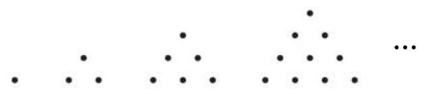
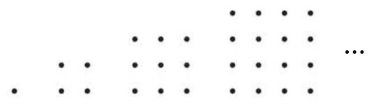
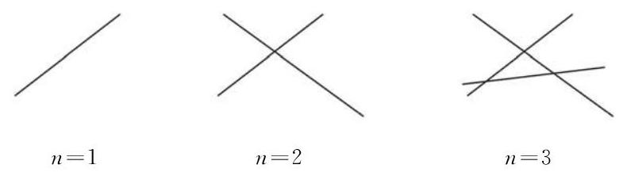
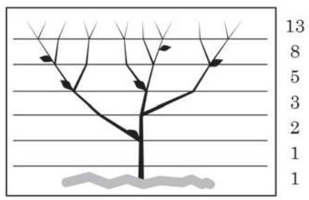
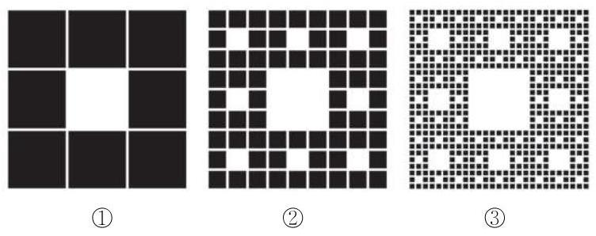

1 数列的概念与性质
除了我们前面学过的等差数列、等比数列这两类特殊的数列外, 在现实世界中, 许多事物的数量也可以排成一列数.
(1)如图 4-3-1，能够表示成三角形点阵的点数依次为
①

图 4-3-1
(2)如图 4-3-2，能够表示成正方形点阵的点数依次为
②

图 4-3-2
(3)目前通用的第五套人民币纸币的面额(单位:元)按照从大到小的顺序排列依次为
③
(4)医生要对病人的体温进行 24 小时监控，某天从 0 时开始记录，每隔 4 小时记录一次，共记录 7 次，监测到病人的体温 (单位:℃)依次为
④
(5)将 的不足近似值按小数位数从少到多的顺序排列依次为
⑤
给定一个数列 ,当项的序数 确定时,相应的项 也就确定了. 于是,项 与项的序数 之间存在着对应关系,这种对应关系可描述如下
项 .
实际中, 也常用列表法来表示数列. 例如, 对于数列④, 我们可以用下表直观地表示:
表 4-1
| 监测次数 | 1 | 2 | 3 | 4 | 5 | 6 | 7 |
| 体温 | 39.2 | 38.3 | 37.5 | 37.0 | 36.8 | 37.2 | 37.6 |
注:体温单位为℃ (摄氏度).
例题 1
例 1 已知数列 的通项公式,写出这些数列的前 5 项:
(1) ；
(2) .
答案与解析收起 / 展开
解 我们可根据相应的通项公式, 用列表法分别写出这两个数列的前 5 项.
公差为正数的等差数列为严格增数列; 公差为负数的等差数列为严格减数列; 公差为零的等差数列为常数列.
表 4-2
例题 2
例 2 给出数列 的下述通项公式,判断这些数列是否为单调数列, 请说明理由.
(1) ；
(2) .
答案与解析收起 / 展开
解( 1 )因为
所以 . 从而数列 为严格减数列.
(2)因为
所以 . 从而数列 为严格增数列.
例题 3
例 3 已知数列 的通项公式是 . 试问: 该数列是否有最大项? 若有, 指出第几项最大; 若没有, 试说明理由.
答案与解析收起 / 展开
解 因为
所以当 时, ; 当 时, ; 当 时, .
于是,数列 的最大项为第 8 项和第 9 项,其值为 .
练习 4.3(1)
练习4.3(1) · 1
- 根据数列 的通项公式填表:
| 1 | 2 | ... | 5 | ... | | ... | | ... |
| | | ... | | ... | 156 | ... | | ... |
答案与解析收起 / 展开
| 1 | 2 | ... | 5 | ... | 12 | ... | | ... |
| 2 | 6 | ... | 30 | ... | 156 | ... | | ... |
练习4.3(1) · 2
- 图中的三角形图案称为谢宾斯基三角形. 在下图四个三角形图案中, 着色的小三角形的个数依次排列成一个数列的前四项, 请写出其前四项, 并给出这个数列的一个通项公式.
(第 2 题)
答案与解析收起 / 展开
练习4.3(1) · 3
- 已知数列 的通项公式是 . 试问: 该数列是否有最小项? 若有,指出第几项最小; 若没有, 试说明理由.
答案与解析收起 / 展开
- . 当 时, ; 当 时, ; 当 时, .
因此,该数列的最小项为第 3 项和第 4 项,其值为 .
2 利用递推公式表示数列
例题 4
例 4 在平面上画 条直线,假设其中任意 2 条直线都相交,且任意 3 条直线都不共点. 设这 条直线将平面分成了 个部分.
(1)写出数列 的一个递推公式；
(2)写出数列 的一个通项公式.
答案与解析收起 / 展开
解 (1) 我们先通过观察 、 2、3 时的图形来探究 的情况.

图 4-3-3
从图 4-3-3 中可以看出:
当 时,第 1 条直线将平面分为两个部分,所以
当 时,第 2 条直线与前面的 1 条直线相交,有 1 个交点. 这个交点将第 2 条直线分成 2 段, 且每一段将原有的平面部分进一步多分出两个部分, 所以
当 时,第 3 条直线与前面的 2 条直线都相交,有 2 个交点. 这 2 个交点将第 3 条直线分成 3 段, 且每一段将原有的平面部分进一步多分出三个部分, 所以
依此类推: 第 条直线与前面的 条直线都相交, 有 个交点. 这 个交点将第 条直线分成 段,且每一段将原有的平面部分进一步多分出 个部分,所以
这样,数列 可以用下面的递推公式表示:
(2)由上述递推公式, 有
...
由上述等式以及 ,可得
当 时,由于 ,上面的等式也成立.
所以,数列 的通项公式为 .
例题 5
例 5 已知数列 的递推公式为
(1)求证:数列 为等比数列；
(2)求数列 的通项公式.
答案与解析收起 / 展开
解 (1) 证明: 已知递推公式 .
在上述等式两边同时加 1 , 得
由递推公式,易证 ,于是 , 故 . 所以,数列 是以 为首项、以 2 为公比的等比数列.
(2)因为数列 是以 为首项、以 2 为公比的等比数列, 所以
从而 ,这就是数列 的一个通项公式.
练习 4.3(2)
练习4.3(2) · 1
- 已知数列 对任意正整数 ,均满足 .
(1)写出数列 的前五项；
(2)求数列 的通项公式.
答案与解析收起 / 展开
练习4.3(2) · 2
答案与解析收起 / 展开
练习4.3(2) · 3
- 已知数列 满足 .
(1)求证:数列 为等比数列；
(2)求数列 的通项公式.
答案与解析收起 / 展开
- (1)当 时,首项为 . 当 时, .
显然 ,进而 . 故 为常数.
因此,数列 是以 4 为首项、以 2 为公比的等比数列.
(2)由(1), ,故 .
课后阅读
神奇的斐波那契数列
1202 年, 意大利数学家斐波那契 (L. Fibonacci) 出版了一部著作《算盘全书》(Liber Abacci). 他在书中提出了一个关于兔子繁殖的问题: 一对新生的小兔子(一雄一雌)，到第 3 个月开始每月新生一对(一雄一雌)小兔子. 在假设不发生死亡的情况下，问:从第一对新生小兔子开始, 到第 10 个月底会有多少对兔子?
第 1 个月, 只有 1 对小兔子; 第 2 个月, 那对小兔子长成熟了; 第 3 个月, 成熟的兔子生下 1 对小兔子, 这时有 2 对兔子; 第 4 个月, 成熟的兔子再生 1 对小兔子, 而另 1 对小兔子长成熟了，共有 3 对兔子; 如此推算下去，我们可以得到下面的表格:
表 4-3
| 时间(月) | 初生兔子(对) | 成熟兔子(对) | 兔子总数(对) |
| 1 | 1 | 0 | 1 |
| 2 | 0 | 1 | 1 |
| 3 | 1 | 1 | 2 |
| 4 | 1 | 2 | 3 |
| 5 | 2 | 3 | 5 |
| 6 | 3 | 5 | 8 |
| 7 | 5 | 8 | 13 |
| 8 | 8 | 13 | 21 |
| 9 | 13 | 21 | 34 |
| 10 | 21 | 34 | 55 |
如果时间不限于 10 个月, 在理想的情境下, 这个问题引出如下的无穷数列:
人们在研究斐波那契数列的过程中，发现该数列在自然界竟是如此普遍. 例如，考虑树木枝条的数量. 某种树木第 1 年长出幼枝，第 2 年幼枝长成粗干，第 3 年粗干可生出幼枝. 如图 4-3-4, 每条树枝都按照这个规律成长, 则每年的分枝数正好构成斐波那契数列.

图 4-3-4
在数学上, 斐波那契数列有许多奇妙的性质. 其任一给定项与其后一项的比交替地大于或小于黄金比例, 并且该比值无限趋近于黄金比例, 即有
只要你的心中有“数”，随处可见斐波那契数列. 它蕴含在自然界中, 也出现在文艺作品里. 它是解开不少数学谜题的钥匙, 更在诸多科学领域中有着广泛的应用. 经由斐波那契数列的镜像, 我们的世界竟是如此五彩缤纷!
习题 4.3
A 组
习题4.3A · 1
- 已知下列数列 的通项公式,写出它的前 4 项.
(1) ； (2) .
答案与解析收起 / 展开
习题4.3A · 2
- 已知数列 的通项公式为 ，79 是否是该数列中的项？若是，是第几项?
答案与解析收起 / 展开
- 由 ,解得 (负根已舍). 所以 是该数列的第 15 项.
习题4.3A · 3
- 已知数列 的通项公式为 .
(1)写出这个数列的前 5 项;
(2)这个数列有没有最小项？如果有，是第几项？
答案与解析收起 / 展开
习题4.3A · 4
- 已知数列 的通项公式为 ,试问: 该数列是否有最大项、最小项? 若有, 分别指出第几项最大、最小; 若没有, 试说明理由.
答案与解析收起 / 展开
- 因为 ,所以,当 时, ；当 时, .
于是,该数列第 3 项为最大项,而 ,且 ,所以数列 无最小项.
习题4.3A · 5
答案与解析收起 / 展开
习题4.3A · 6
答案与解析收起 / 展开
习题4.3A · 7
- 一个正方形被等分成九个相等的小正方形,将最中间的一个正方形挖掉,得图①; 再将剩下的每个正方形都分成九个相等的小正方形, 并将其最中间的一个正方形挖掉, 得图②; 如此继续下去……
(1)图③中共挖掉了多少个正方形？
(2)求每次挖掉的正方形个数所构成的数列的一个递推公式.

(第 7 题)
答案与解析收起 / 展开
- (1) 73 个.
(2)设每次挖掉的正方形的个数所构成的数列为 . 该数列满足的递推公式为 或 ,数列 可以表示为:
B 组
习题4.3B · 1
- 已知数列 的通项公式为 ,试问: 该数列是否有最大项、最小项? 若有, 分别指出第几项最大、最小; 若没有, 试说明理由.
答案与解析收起 / 展开
- 数列 的最大项为第 10 项, ,最小项为第 9 项,
习题4.3B · 2
- 已知数列 的通项公式为 ,其中 是常数. 若数列 为严格增数列,求 的取值范围.
答案与解析收起 / 展开
习题4.3B · 3
- 已知数列 的前 项和为 ,且 . 求数列 的通项公式.
答案与解析收起 / 展开
习题4.3B · 4
- 已知数列 的前 项和为 .
(1)求数列 的通项公式；
(2)若数列 满足 ，间是否存在正整数 ，使得 成立，并说明理由.
答案与解析收起 / 展开
- (1)数列 的通项公式为 .
(2)提示:因为数列 的最大项为 ,所以不存在正整数 ,使得 成立.
习题4.3B · 5
- 某皮革厂第 1 年初有资金 1000 万元，由于引进了先进的生产设备，资金年平均增长率可达到 50%. 每年年底定额扣除下一年的消费基金后, 将剩余资金投入再生产. 这家皮革厂每年应扣除多少消费基金, 才能实现资金在第 5 年年底扣除消费基金后达到 2000 万元的目标?(结果精确到 1 万元)
答案与解析收起 / 展开
- 设从第 1 年年初算起,该厂第 年底的剩余资金为 万元,则 ,而经过 5 年底的剩余资金为 万元. 设这家皮革厂每年应扣除消费基金 万元,则 ,变形为 ,所以 是以 1.5 为公比的等比数列, ,根据题意知 2000,解得 万元.
所以这家皮革厂每年应扣除消费基金 424 万元, 才能实现资金经过 5 年达到 2000 万元的目标.